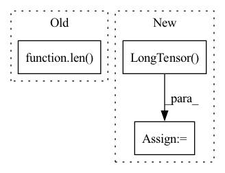

Pattern ID :23564
Before Change
scope.append((total_atoms, n_atoms))
total_atoms += n_atoms
total_bonds = len( all_bonds)
max_num_bonds = max(len(bonds) for bonds in in_bonds)
fatoms = torch.stack(fatoms, dim=0)
fbonds = torch.stack(fbonds, dim=0)After Change
fbonds = torch.stack(fbonds, dim=0)
// Map each atom to all bonds going into that atom
agraph = torch.LongTensor( [bonds + [0] * (max_num_bonds - len(bonds)) for bonds in in_bonds]) // zero padding
// Map each bond to all bonds going into that bond"s start atom
bgraph = [[]] + [[bond if all_bonds[bond][0] != a2 else 0 for bond in in_bonds[a1]] for a1, a2 in all_bonds[1:]]In pattern: SUPERPATTERN
Frequency: 4
Non-data size: 3
Instances Fragment ID: 73795585
Project Name: aamini/chemprop
Commit Name: 64f98d60d13bc4bd7131ea4453b03163503cce0c
Time: 2018-10-02
Author: swansonk.14@gmail.com
File Name: mpn.py
M Class Name: AnonimousClass
N Class Name: AnonimousClass
M Method Name: mol2graph(2)
N Method Name: mol2graph(2)
M Parent Class:
N Parent Class:
M File Name: mpn.py
N File Name: mpn.py
M Start Line: 143
M End Line: 240
N Start Line: 222
N End Line: 232
Before Change
max_text_len = max([x[3].size(0) for x in batch])//textの最大の長さを算出
wav_lengths = torch.LongTensor(len(batch))//torch.size([len(batch)])
spec_lengths = torch.LongTensor(len( batch) )
speaker_id = torch.LongTensor(len(batch))
text_lengths = torch.LongTensor(len(batch))
After Change
wav_lengths = torch.LongTensor(batch_size)//torch.size([batch_size])
spec_lengths = torch.LongTensor(batch_size)
speaker_id = torch.LongTensor(batch_size)
text_lengths = torch.LongTensor( batch_size)
wav_padded = torch.zeros(batch_size, 1, max_wav_len, dtype=torch.float32)
spec_padded = torch.zeros(batch_size, batch[0][1].size(0), max_spec_len, dtype=torch.float32)
text_padded = torch.zeros(batch_size, max_text_len, dtype=torch.long) Fragment ID: 73795601
Project Name: zassou65535/vits
Commit Name: 31471c44aeb9266656a06fd6ac4c270aec9f8183
Time: 2022-01-14
Author: gravity@kuf.biglobe.ne.jp
File Name: module/dataset_util.py
M Class Name: AnonimousClass
N Class Name: AnonimousClass
M Method Name: collate_fn(1)
N Method Name: collate_fn(1)
M Parent Class:
N Parent Class:
M File Name: module/dataset_util.py
N File Name: module/dataset_util.py
M Start Line: 120
M End Line: 127
N Start Line: 119
N End Line: 128
Before Change
n_filled = 0
try:
while n_filled < self.bptt:
if streams[i] is None or len( streams[i]) <= 1:
streams[i] = next(sent_stream)
// number of new tokens to fill in
n_new = min(len(streams[i]) - 1, self.bptt - n_filled)
After Change
n_filled = 0
try:
while n_filled < self.bptt:
stream = torch.LongTensor( [next(sent_stream) for _ in range(self.bptt + 1)])
// number of new tokens to fill in
n_new = min(len(stream) - 1, self.bptt - n_filled)
Fragment ID: 73795599
Project Name: microsoft/archai
Commit Name: 429c2ddca3e98bbe44fde600f705f7578bd74678
Time: 2022-12-16
Author: gth.rosa@uol.com.br
File Name: archai/nlp/datasets/lm_iterators.py
M Class Name: LMShuffledIterator
N Class Name: LMShuffledIterator
M Method Name: stream_iterator(2)
N Method Name: stream_iterator(2)
M Parent Class: object
N Parent Class: object
M File Name: archai/nlp/datasets/lm_iterators.py
N File Name: archai/nlp/datasets/lm_iterators.py
M Start Line: 122
M End Line: 150
N Start Line: 141
N End Line: 148
Before Change
t, avg_acc = ACC(loc_pred[0], loc_true)
return t, avg_acc
else:
tot_list = np.zeros(len( loc_true) , dtype=int)
for i in range(topK):
t, avg_acc = ACC(loc_pred[i], loc_true)
tot_list = tot_list + tAfter Change
res: (batch_size * 1)
"""
assert topK > 0, "top-k ACC评估方法：k值应不小于1"
loc_pred = torch.LongTensor( loc_pred)
val, index = torch.topk(loc_pred, topK, 1) // 使用 torch 的 topk 来实现
index = index.numpy()
res = []
for i, p in enumerate(index): Fragment ID: 73795597
Project Name: libcity/bigscity-libcity
Commit Name: 51403f094fe439b6470cf8b36665bff72f09fddd
Time: 2020-12-23
Author: 33283819+WenMellors@users.noreply.github.com
File Name: trafficdl/evaluator/eval_funcs.py
M Class Name: AnonimousClass
N Class Name: AnonimousClass
M Method Name: top_k(3)
N Method Name: top_k(3)
M Parent Class:
N Parent Class:
M File Name: trafficdl/evaluator/eval_funcs.py
N File Name: trafficdl/evaluator/eval_funcs.py
M Start Line: 54
M End Line: 64
N Start Line: 62
N End Line: 72